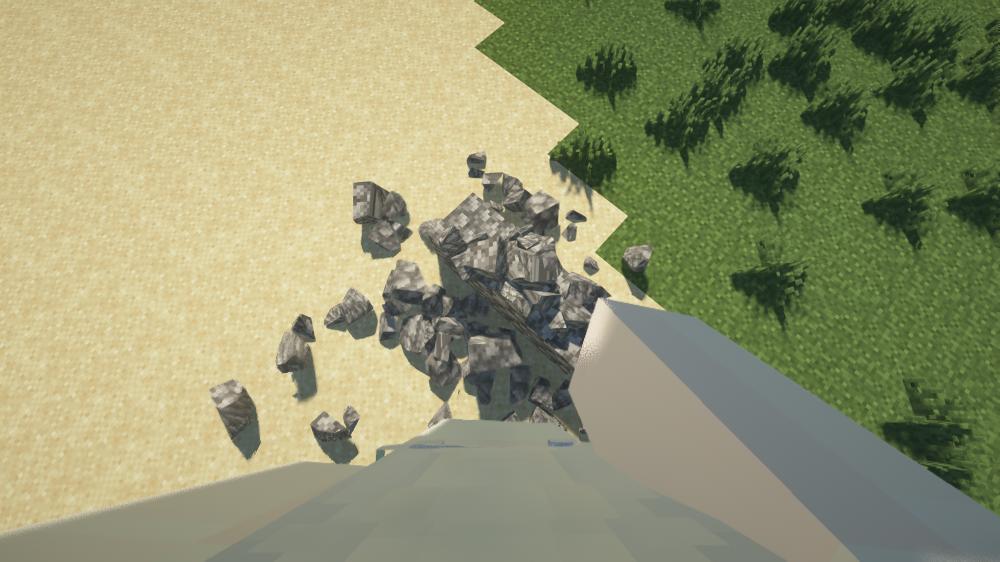
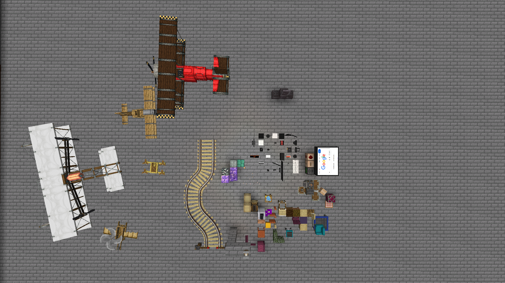
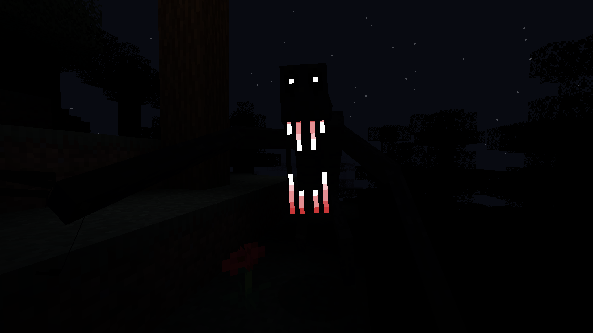
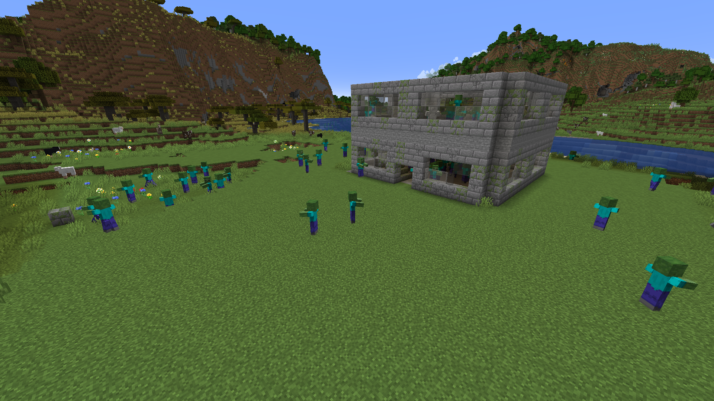
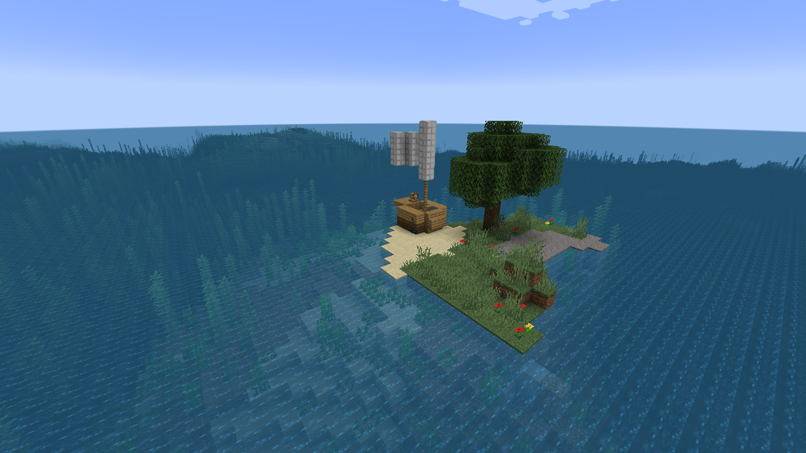
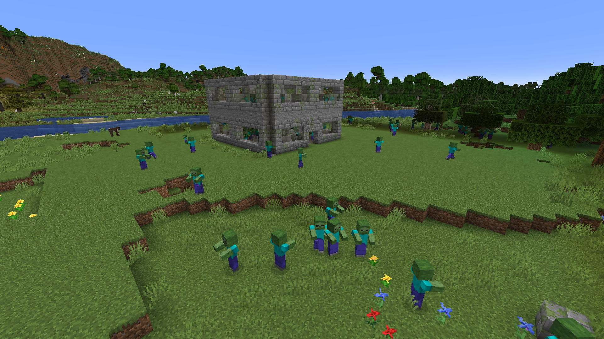
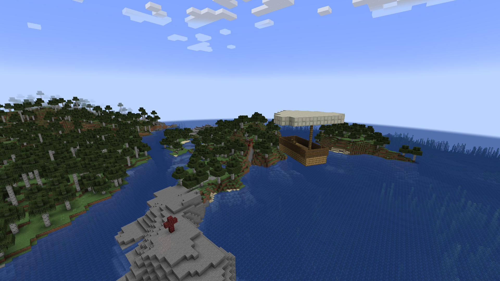

Browse Modpacks
Search, filter, and download the most polished Minecraft modpacks in one beautiful hub.

Builder Pack
Forge, 1.20.1
Essential mods included
A creative city-builder pack with everything needed to craft, build, and thrive.
Download
Super Horror+
Forge, 1.20.1
Intense atmosphere
Survive terrifying nights with a carefully crafted horror experience.
Note: The Broken Script may crash your game, if you encounter with a lot of crashes, remove the mod from the mods folder.
Download
Super Horror
NeoForge, 1.21.1
Bugfix
Face six horror mods designed to keep you on edge through every moment.
Download
Optimized Vanilla
Fabric / Forge / NeoForge, 1.20.1 / 1.21 / 1.21.1
A performance-first pack that keeps vanilla vibes while boosting FPS.
Note: Result may not be visible with shaders.
Download
Optimized Survival
Fabric, 1.21
Steady progression
A polished, comfortable survival pack that streamlines fun without losing challenge.
Download
Zombie Apocalypse
Forge, 1.20.1
Undead survival
Hold the line against evolving zombie threats in this intense apocalypse bundle.
Download
Island Escape
Forge, 1.20.1
Hard survival
Test your survival skills while trying to escape a dangerous island environment.
Download
The Last Of Us Zombies
Forge, 1.20.1
Survival horror
A tense pack inspired by the atmosphere and danger of The Last of Us.
Download
Horror Escape
Forge, 1.20.1
Cursed airship
Escape a haunted airship while exploring cursed skies and hidden horrors.
Download